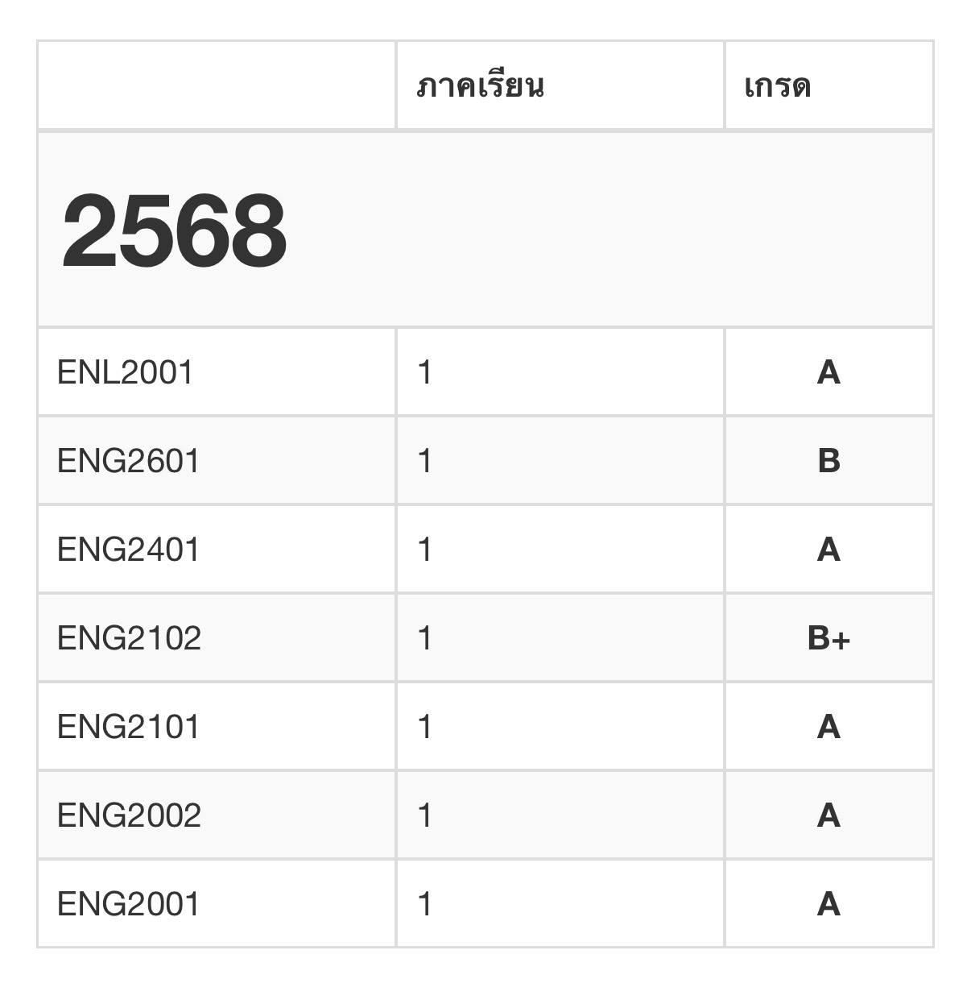

🌙
ENG · Ramkhamhaeng
ผลการเรียนส่วนตัว
หลักฐานผลการเรียนจริง เพื่อความมั่นใจว่าสรุปมาจากคนที่เข้าใจเนื้อหาจริง 🎓
หลักฐานผลการเรียนจริง เพื่อความมั่นใจว่าสรุปมาจากคนที่เข้าใจเนื้อหาจริง 🎓
นี่คือผลการเรียนจริงของจูนในวิชาที่นำมาทำชีทสรุปขายค่ะ เพื่อให้ทุกคนมั่นใจได้ว่าเนื้อหาที่สรุปมาจากคนที่เข้าใจและผ่านวิชานั้นมาจริงๆ ไม่ได้ก็อปมาส่งๆ ค่ะ 💪
